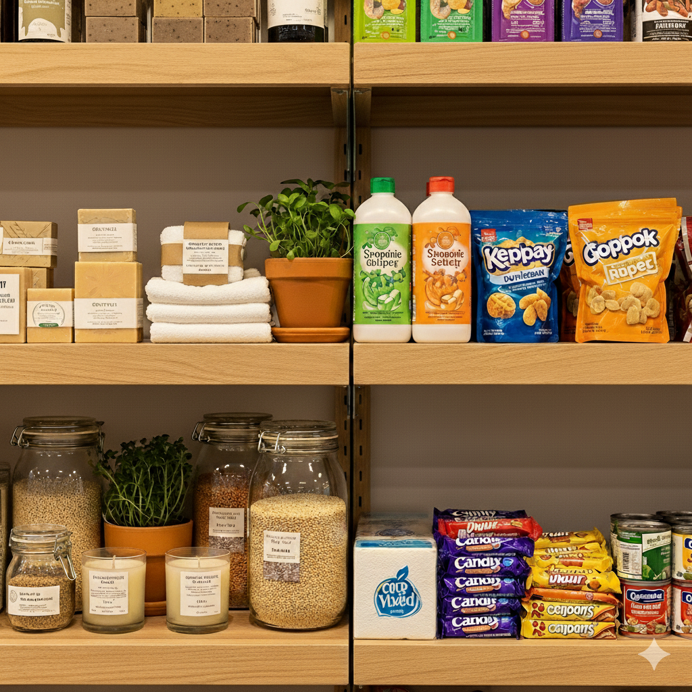
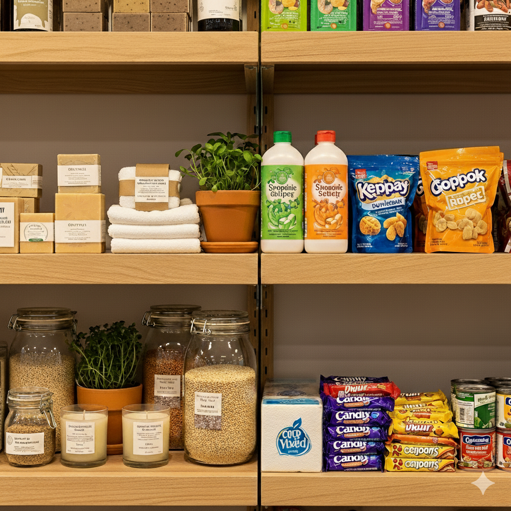

Problemas
A mudança para um modelo mais sustentável enfrenta uma série de obstáculos. Alguns dos principais problemas incluem:
 

-
Obsolescência Programada e Percebida: Produtos são projetados para ter uma vida útil limitada (obsolescência programada) ou são substituídos por modelos mais recentes, mesmo estando em perfeito estado (obsolescência percebida). Isso aumenta a produção de lixo e a exploração de recursos.
-
Apatia do Consumidor: Muitas pessoas não se sentem responsáveis ou capazes de fazer a diferença. A falta de conhecimento sobre os impactos de suas escolhas e a percepção de que a mudança individual é insignificante contribuem para a inércia.
-
Acesso e Custo: Produtos e serviços sustentáveis muitas vezes são mais caros ou difíceis de encontrar. Isso cria uma barreira econômica, tornando a opção sustentável um privilégio para poucos e não uma escolha acessível a todos.
-
Falta de Transparência e Greenwashing: Empresas usam a sustentabilidade como estratégia de marketing, sem adotar práticas realmente sustentáveis. O greenwashing confunde o consumidor e mina a confiança nas marcas, dificultando a identificação de produtos verdadeiramente ecológicos.
-
Pressão Social e Status: A sociedade muitas vezes associa a felicidade e o sucesso à posse de bens materiais. Essa pressão cultural leva ao consumismo excessivo, onde o "ter" é mais valorizado do que o "ser".